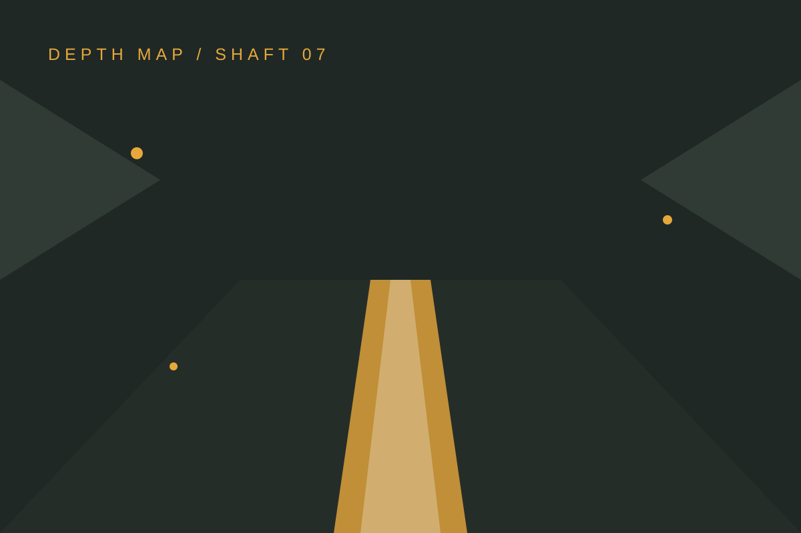

FALLING PICKAXE / КАК ИГРАТЬ В FALLING PICKAXE
Как играть в Falling Pickaxe
Последовательный маршрут помогает не пропустить возраст, легальность, правила, лимиты и безопасный выход из аккаунта.

01 / Возраст и легальность
Играйте только после проверки возраста и того, что онлайн-казино разрешено в вашей стране.02 / Демо и правила
Если демо доступно, используйте его для интерфейса. Затем откройте таблицу выплат, RTP, волатильность и лимиты.03 / Лимит и ставка
Задайте финансовый и временной лимит до начала. Не увеличивайте ставку ради отыгрыша.04 / Выход
Завершите сессию через меню аккаунта, не храните пароль на чужом устройстве и обратитесь за помощью при потере контроля.Коротко перед переходом
Что такое Falling Pickaxe?
Falling Pickaxe — игра от PixMove с шахтёрской тематикой и механикой падающего инструмента. Точные правила и доступность зависят от площадки.
Есть ли у Falling Pickaxe демо?
Демо может быть доступно у выбранного казино. Оно предназначено для знакомства с интерфейсом и не гарантирует результат при игре на деньги.
Где проверить RTP и волатильность?
Ищите эти параметры в правилах игры, справке казино или таблице выплат. Если данных нет, уточните их у площадки до ставки.
Действуют ли бонусы для Falling Pickaxe?
Условия бонусов зависят от казино, региона и типа аккаунта. Читайте полный текст акции, включая wagering, срок и ограничения.
Можно ли играть без депозита?
Предложение без депозита может отсутствовать или меняться. Не путайте его с демо и проверяйте требования по верификации и отыгрышу.
Что именно вы получите от Falling Pickaxe
Падающая кирка задаёт визуальный темп: вы видите действие, оцениваете следующий шаг и не теряетесь в перегруженном интерфейсе.
Блочные породы, янтарная руда и кристаллы создают узнаваемую тему, которая отличается от обычных карточных и фруктовых слотов.
Перед переходом можно сверить демо, правила, параметры игры и доступность акций на выбранной площадке — без обещаний лёгкого результата.
ВЫХОД НА ШТОЛЬНЮ
Сначала условия. Затем решение.
Переход открывает путь к игре на отдельном адресе. Доступность и правила определяет выбранная площадка.